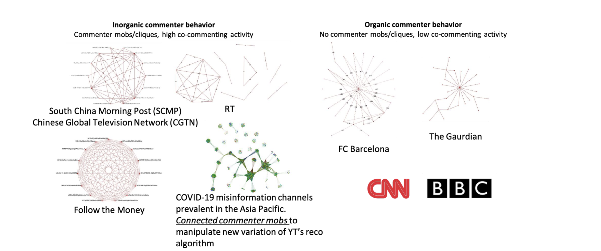

Commenter Flash Mob
A type of coordinated inauthentic behavior, commenter flash mob is a tactic where a seemingly arbitrary group of commenters collectively comment on a (or a set of) video(s). Such an act seems uncoordinated to an outsider but there is a sophisticated coordination in their activity, like a flash mob. Their comments may or may not be relevant to the video content. Some examples of coordinated commenter flash mobs are shown in Figure 1 (left). As a contrasting example, a regular commenter behavior is shown in Figure 1 (right). Some of the commenter flash mobs shown in figure 1 (left) comprises of groups of commenters who co-commented on over 100 videos. Such commenter flash mobs can create a perception of a content being popular thereby helping increase its virality.

Figure 1. Commenter Flash Mob Behavior (left) and Regular Commenter Behavior (right).
Detection and Impact Assessment
Table 1 shows the data elements and analytical methodology taxonomy needed to detect and assess commenter (flash) mobs from multimedia OIE.
Table 1. Data Elements and Analytical Methodologies needed to Detect and Assess Commenter Flash Mob Tactic.
Figure 1. Commenter Flash Mob Behavior (left) and Regular Commenter Behavior (right).
Futher Reading
Baris Kirdemir, Oluwaseyi Adeliyi, and Nitin Agarwal. Towards Characterizing Coordinated Inauthentic Behaviors on YouTube. The 2nd Workshop on Reducing Online Misinformation through Credible Information Retrieval
(ROMCIR 2022) held with the 44th European Conference on Information Retrieval (ECIR 2022). April 10-14, 2022, Stavanger, Norway.
Muhammad Nihal Hussain, Samer Al-Khateeb, Serpil Tokdemir and Nitin
Agarwal. Analyzing Disinformation and Crowd Manipulation Tactics on YouTube. In the Proceedings of the IEEE/ACM International Conference on Advances in Social Networks Analysis and Mining (ASONAM), International Workshop on Social Network Analysis Surveillance Technologies (SNAST),
August 28-31, 2018, Barcelona, Spain. Springer.